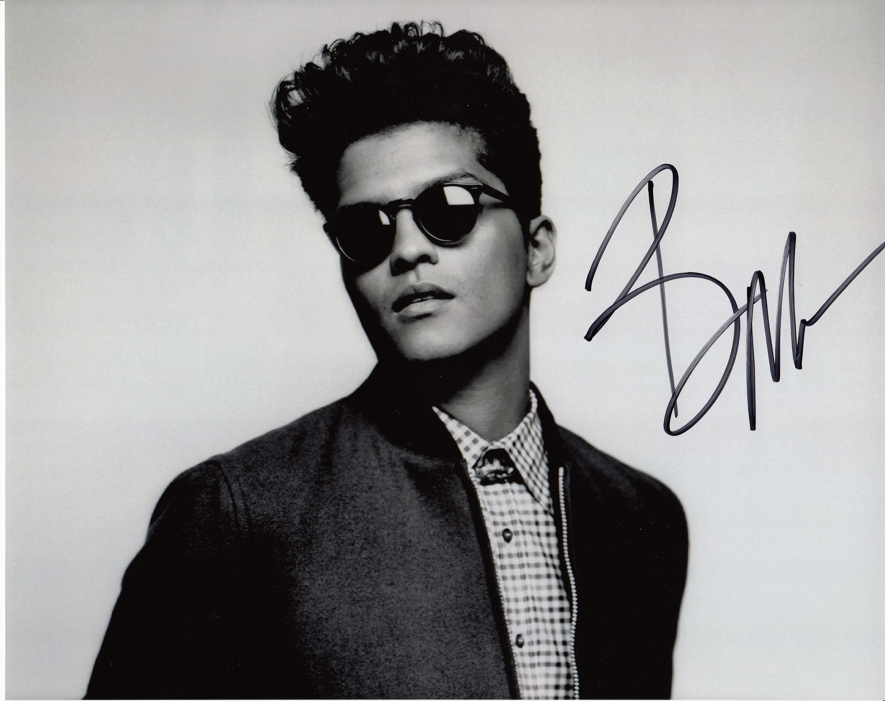
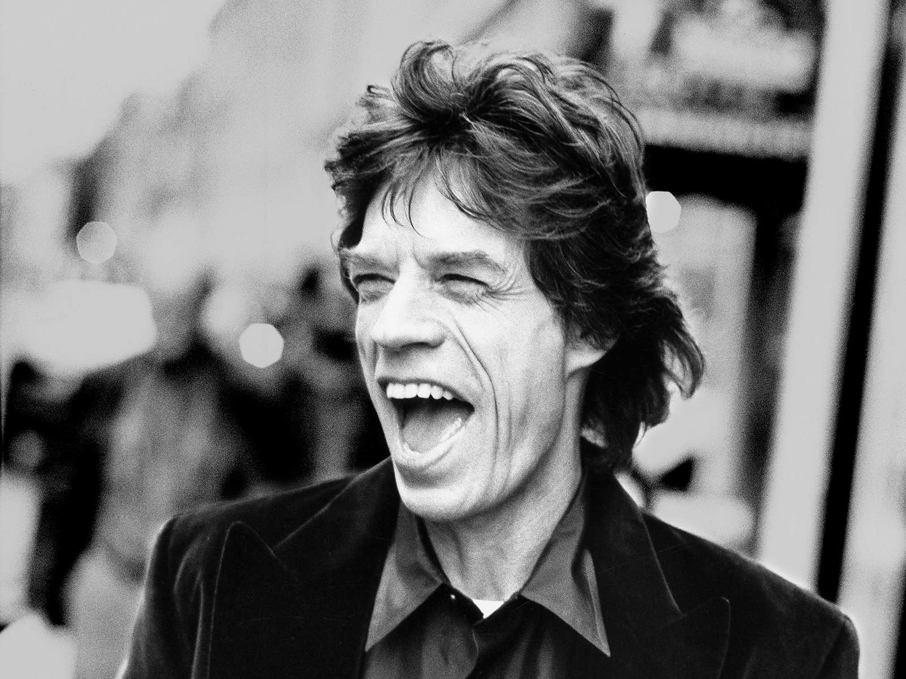
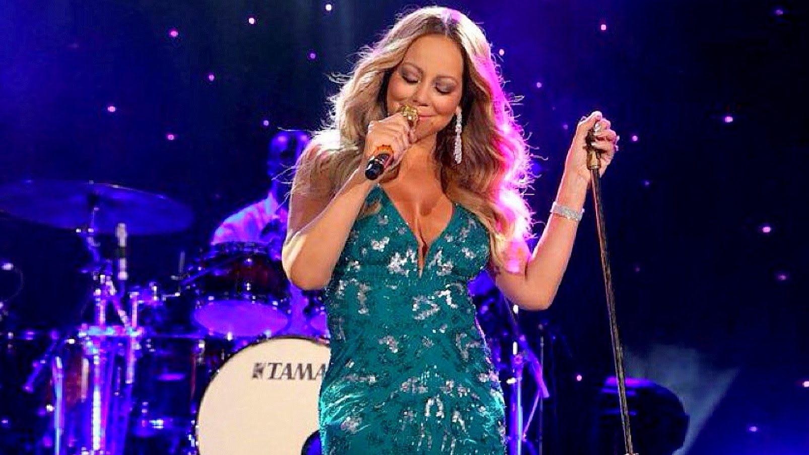

Bruno Mars receives biggest
BRIT Awards sales boost
R&B superstar Bruno Mars received the biggest sales boost of any artist performing at the BRIT Awards last Wednesday (22Feb17). Bagging a coveted performing slot at the British music prizegiving in front of millions of U.K. TV viewers is known as a surefire way to gain sales and climb the pop charts.
According to Britain's Music Week magazine Bruno's performance of his song That's What I Like caused sales of the track to rise by 180 per cent, causing it to move up to number 44 in the midweek update of the official U.K. chart. Another big post-BRITs winner was Emeli Sande, who not only performed her lovelorn ballad Hurts at the awards show but picked up the Best British Female Solo Artist award at the ceremony.
Her album Long Live The Angels jumped 19 places to number nine in the U.K. album charts off the back of a sales boost of 146.6 per cent. Little Mix opened they event with a futuristic rendition of their 2016 number one Shout Out To My Ex,a track which was also named as Best British Single. After a steady decline in its position since topping the chart last October (16), the track leapt up the charts to number 24 after an increase of sales of 37.7 percent. Ed Sheeran performed a medley of his singles Shape of You and Castle on the Hill at the ceremony, but appearing did not affect his record sales much. However, despite an increase in sales of just 3.5 per cent, Shape of You is still on course to remain at number one for an eighth week when the official chart is announced on Friday (03Mar17). British grime star Stormzy, who joined Ed on the BRIT Awards stage for a surprise collaboration, also appears to have benefited as his new album Gang Signs & Prayer, released on Friday (24Feb17) looks on course to debut at number one after topping the midweek rundown.
Mick Jagger: 'I’m working on new [Rolling Stones] songs now'
The Rolling Stones had yet another big hit on their hands late last year when they released their all-blues album Blue & Lonesome. Some didn’t expect it to do well based on the fact that there were no originals, just covers of classic blues from past decades. They shouldn’t have worried. The album became the band’s first number 1 studio album in the U.K. since 1994’s Voodoo Lounge and its peak at 4 in the U.S. kept a streak of top five studio album going that went all the way back to their debut in 1964. That’s 24 straight top five albums over more than half a century.
The big question, though, is “does the band have another studio album in them?” The members range from age 69 (Ronnie Wood) to 75 (Charlie Watts) and Watts, himself, has been more and more difficult to get out on the road for any extended time. Fans, don’t worry. It looks like there is more to come. Roger Friedman at Showbiz411 is reporting that he spoke with Mick Jagger a few nights ago with Jagger telling him “I’m working on new songs now.” According to Friedman, he went on to say the next album would be all originals.
No time frame was mentioned, so it could easily be 2018 before we see a new release but, hey, they’ve proven over and over that they remain recording and touring machines. Why not keep going?
Mariah Carey courts attention with provocative kissing picture
Mariah Carey posted a picture of herself and boyfriend Bryan Tanaka locking lips on her Instagram page on Tuesday (28Feb17). The flamboyant Butterfly singer and her new man, her former backup dancer, have been inseparable ever since the end of her engagement to billionaire ex James Packer late last year (16), and Mariah confirmed Bryan was her "boyfriend" during an interview earlier this month (Feb17).
The flamboyant Butterfly singer and her new man, her former backup dancer, have been inseparable ever since the end of her engagement to billionaire ex James Packer late last year (16), and Mariah confirmed Bryan was her "boyfriend" during an interview earlier this month (Feb17).